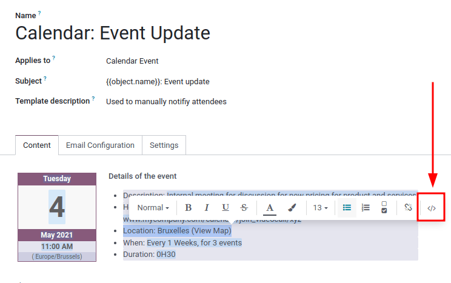
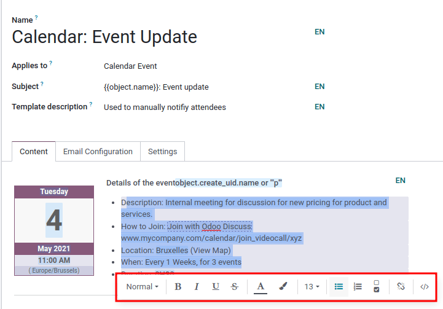
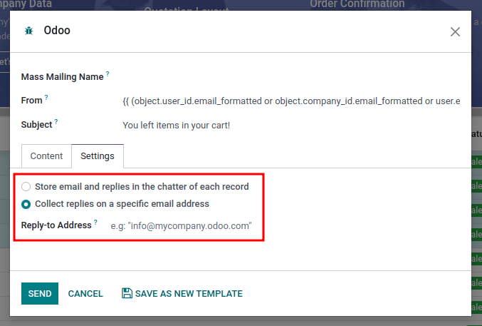

Plantillas de correo electrónico¶
Las plantillas de correo electrónico son mensajes guardados que se utilizan varias veces para enviar correos electrónicos desde la base de datos. Permiten que los usuarios envíen mensajes de calidad sin tener que redactar el mismo texto una y otra vez.
Si crea diferentes plantillas que se adapten a situaciones específicas, los usuarios podrán elegir el mensaje adecuado para el público adecuado. Esto aumenta la calidad del mensaje y la tasa general de interacción con el cliente.
Nota
Las plantillas de correo electrónico en Odoo usan QWeb o XML, de esta manera se pueden editar los correos electrónicos en su presentación final, esto significa que las personalizaciones son mejores y no necesita editar ningún tipo de código. Como resultado, Odoo puede usar una interfaz gráfica de usuario (GUI) para editar correos electrónicos, la cual edita el código backend. Cuando el programa del usuario final lee el correo recibido, aparecerán diferentes formato y gráficos.
Si desea acceder a las plantillas de correo electrónico desde el modo de desarrollador, vaya a la aplicación .
Editar las plantillas de correo electrónico¶
La función paleta de comandos también se puede usar al escribir plantillas de correo electrónico. Gracias a ella podrá editar directamente el formato y texto de las plantillas, así como añadir enlaces, botones, opciones para agendar o imágenes.
Además, podrá editar directamente el código XML/HTML de la plantilla de correo electrónico, mediante el icono </>. También podrá utilizar marcadores de posición dinámicos (que hacen referencia a campos dentro de Odoo).
Paleta de comandos¶
La función paleta de comandos es un editor de texto enriquecido con varios tipos de formato, diseño y opciones de texto. También se puede usar para añadir funciones XML/HTML en una plantilla de correo electrónico. Esta función se activa al escribir “/” en el cuerpo de la plantilla.
Una vez que escriba / en el cuerpo de la plantilla de correo electrónico, aparecerá un menú desplegable con las siguientes opciones:
Estructura
Lista con viñetas: crea una lista con viñetas.
Lista numerada: crea una lista numerada.
Lista de pendientes: lleva seguimiento de las tareas con una lista de pendientes.
Tabla: inserta una tabla.
Separador: inserta una línea horizontal de separación.
Cita: añade un bloque de cita.
Código: añade una sección de código.
2 columnas: agrega dos columnas.
3 columnas: agrega tres columnas.
4 columnas: agrega cuatro columnas.
Formato
Título 1: título para una sección en tamaño grande.
Título 2: título para una sección en tamaño medio.
Título 3: título para una sección en tamaño pequeño.
Cambiar dirección: cambia la dirección del texto.
Texto: bloque para un párrafo.
Multimedia
Imagen: insertar una imagen.
Artículo: vincular un artículo.
Navegación
Enlace: agregar un enlace.
Botón: agregar un botón.
Cita: agregar una cita en específico.
Calendario: agendar una cita.
Widgets
3 estrellas: agregar una calificación de tres estrellas.
5 estrellas: agregar una calificación de cinco estrellas.
Bloques generales
Firma: incluya su firma.
Herramientas de marketing
Marcadores de posición dinámicos: agregue contenido personalizado.
Truco
Si desea usar cualquiera de estas opciones, haga clic en la función deseada desde el menú desplegable de la paleta de comandos. Para dar formato a un texto existente con una opción de texto (por ejemplo, Encabezado 1, Cambiar dirección, etc.), resalte el texto, teclee la tecla de activación (barra inclinada) / y seleccione la opción deseada en el menú desplegable.

Ver también
Editor de código XML/HTML¶
Para acceder al editor XML/HTML desde una plantilla de correo primero debe activar el modo de desarrollador. Después deberá hacer clic en el icono </> ubicado en la esquina superior derecha de la plantilla y empiece a editar el XML/HTML. Para regresar al editor de texto estándar haga clic en el icono </> de nuevo.
Advertencia
Debe ser cuidadoso con el editor XML/HTML ya que es el código backend de la plantilla. Si edita mal el código puede resultar en un error inmediato en la plantilla o en un error al actualizar la base de datos.
Marcadores de posición dinámicos¶
Los marcadores de posición dinámicos hacen referencia a ciertos campos dentro de la base de datos de Odoo para producir datos únicos en la plantilla de correo electrónico.
Example
A muchas empresas les gusta personalizar sus correos electrónicos con información personalizada del cliente para que destaquen. Esto es posible en Odoo si se hace referencia a un campo dentro de un modelo, solo es necesario insertar un marcador de posición dinámico. Por ejemplo, puede agregar el nombre de un cliente al correo electrónico con el campo Cliente en el modelo de la orden de venta. El marcador de posición dinámico para este campo es {{ object.partner_id }}.
Los marcadores de posición dinámicos están codificados para mostrar campos desde la base de datos y se pueden usar en el cuerpo (en la pestaña Contenido) de la plantilla de correo electrónico. También se pueden utilizar en los campos disponibles en la pestaña Configuración de correo electrónico, el asunto del correo electrónico y el idioma.
Para usar los marcadores de posición dinámicos en el cuerpo de un correo electrónico, abra la función paleta de comandos. Escriba / en el cuerpo de la plantilla de correo en la pestaña Contenido, vaya a la parte inferior de la lista de opciones, a Herramientas de marketing y después seleccione marcador de posición dinámico. Elija un marcador de posición dinámico en la lista de opciones disponibles y siga las instrucciones para configurarlo con el campo correspondiente deseado. Cada marcador de posición dinámico se configura de forma diferente.
Nota
Cada combinación única de Campos, Submodelos y Subcampos crea un marcador de posición dinámico diferente. Imagínelo como una combinación con el campo que se está creando.
Para buscar campos disponibles, escriba el nombre del front-end (en la interfaz del usuario) del campo en la búsqueda. Esto mostrará los resultados de todos los campos disponibles para el modelo para el que se crea la plantilla de correo electrónico.
Advertencia
Personalizar las plantillas de correo electrónico está fuera del alcance del Soporte de Odoo.
Editor de texto enriquecido¶
Puede acceder a la barra de herramientas de editor de texto enriquecido resaltando el texto en la plantilla de correo electrónico. Esto se puede usar para cambiar el encabezado, tamaño/estilo de la fuente, color, agregar un tipo de lista o un enlace.
Restablecer plantillas de correo electrónico¶
Si la plantilla de correo electrónico no funciona porque el código ha sido alterado, se puede reestablecer de nuevo a la plantilla predeterminada. Simplemente haga clic en el botón Reestablecer plantilla ubicado en la parte superior izquierda de la pantalla y la plantilla se reestablecerá.

Respuesta predeterminada en las plantillas de correo electrónico¶
En la pestaña de Configuración de correo electrónico en una plantilla de correo está el campo Responder a. En este campo, agregue las direcciones de correo electrónico a las que se redirigen las respuestas cuando se envían correos electrónicos en masa utilizando esta plantilla.
Truco
Agregue varias direcciones de correo electrónico con una coma , entre las direcciones o marcadores de posición dinámicos.

El campo Responder a solo se usa para los correos en masa (enviar correos electrónicos en grandes cantidades). Estos correos en masa se pueden enviar en casi cada aplicación en Odoo que tenga una opción de lista de vista.
Para enviar correos en masa, al estar en una vista de lista, seleccione las casillas que están junto a los registros deseados a los que se enviarán los correos electrónicos, haga clic en el botón de Acción (representado por el icono de ⚙️ (engranaje)) y seleccione la opción que desee para el correo electrónico del menú desplegable de Acción. Las opciones de correo pueden variar dependiendo de la vista de lista particular y la aplicación.
Si es posible enviar un correo electrónico, aparecerá una ventana emergente para redactarlo con valores que puede definir y personalizar. Esta opción estará disponible en el botón de Acción en las páginas donde se pueden enviar correos en masa; por ejemplo, la página de Clientes de la aplicación CRM. Esta acción ocurre en toda la base de datos de Odoo.
Correos electrónicos transaccionales y URLs correspondientes¶
En Odoo, varias acciones pueden activar el envío de correos automatizados. A estos correos se les conoce como correos transaccionales y a veces contienen enlaces que lo redirigen a la base de datos de Odoo.
De manera predeterminada, los enlaces generados por la base de datos usan la clave dinámica web.base.url en los parámetros del sistema. Para más información acerca de esto, consulte el documento de parámetros del sistema.
Si no tiene instalada la aplicación Sitio web, la clave web.base.url siempre será el parámetro predeterminado que se usa para generar todos los enlaces.
Importante
La clave web.base.url puede tener un solo valor, lo que significa, que en un ambiente de multi sitios web o multiempresas, incluso si hay un nombre de dominio específico para cada sitio web, los enlaces generados para compartir un documento (o los enlaces dentro de un correo transaccional) pueden quedarse igual sin importar si el sitio web o la empresa está relacionada con el envío del correo o documento.
Example
Si el valor del parámetro del sistema web.base.url es igual a https://www.miempresa.com y hay dos empresas separadas en Odoo con distintas URL para los sitios web https://www.miempresa.com y https://www.miempresa1.com, los enlaces que Odoo crea para compartir un documento o enviar un correo transaccional provienen del dominio https://www.miempresa.com, sin importar qué empresa envía el documento o correo electrónico.
Esto no siempre es así, algunas aplicaciones Odoo (por ejemplo, Comercio electrónico) tienen un enlace establecido en la base de datos con la aplicación Sitio web. En ese caso, si define un dominio específico para el sitio web, la URL generada en la plantilla de correo electrónico utiliza el dominio definido en el sitio web correspondiente de la empresa.
Example
Cuando un cliente realiza una compra en un sitio web de Odoo con Comercio electrónico, la orden tiene un vínculo establecido a ese sitio web. Como resultado, los enlaces en el correo electrónico de confirmación que se envía al cliente utilizan el nombre de dominio de ese sitio web en específico.
Nota
Un documento que se compartió mediante la aplicación Documentos siempre usará la clave web.base.url, ya que el documento compartido no está asociado a ningún sitio web particular. La URL siempre será la misma (el valor de la clave web.base.url), sin importar la empresa desde la que se comparte. Esta es una limitación conocida.
Para obtener más información sobre cómo configurar los dominios, consulte la documentación sobre nombres de dominio.
Actualizar traducciones en plantillas de correos electrónicos¶
En Odoo, las plantillas de correo electrónico se traducen de forma automática para todos los usuarios de la base de datos, en todos los idiomas instalados. No debería ser necesario cambiar las traducciones, pero si por alguna razón específica necesita modificar algunas, puede hacerlo.
Advertencia
Al igual que las modificaciones al código, si los cambios a la traducción no se realizan correctamente (por ejemplo, modificaciones que causen errores en la sintaxis), puede dañar la plantilla y, como resultado, la plantilla aparecerá en blanco.
Para editar traducciones, primero habilite el modo de desarrollador. En la plantilla de correo electrónico, haga clic en el botón editar y luego haga clic en el botón de idioma, representado por las iniciales del idioma que utiliza en ese momento (por ejemplo, guilabel:EN para inglés).
Nota
El botón de idioma no aparecerá si no hay varios idiomas instalados y activados en la base de datos, tampoco si el usuario no tiene permisos de administrador.
Aparecerá una ventana emergente con los diferentes idiomas instalados en la base de datos, desde allí podrá editar las traducciones. Cuando haya realizado los cambios deseados, haga clic en el botón correspondiente para guardar los cambios.

Nota
Al editar las traducciones, el idioma predeterminado en la base de datos aparece en negritas.